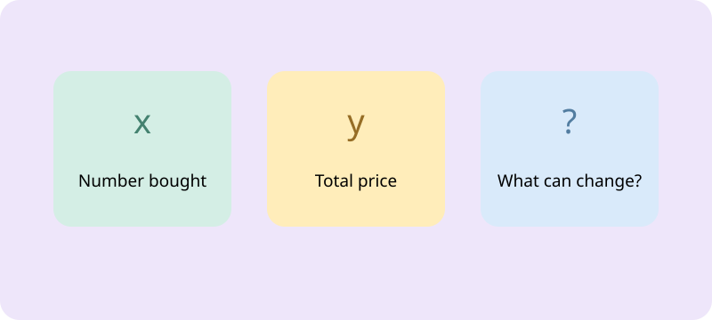

Y7 MATHS · LEARN THROUGH PLAY
Variable Spotter
Find the quantities that can change in five everyday situations. Choose sensible variables, give x and y a meaning, and distinguish a variable from a stated constant.

Preparing your game board…
Choose Play for my teacher to record completed game rounds, or Practice to keep them local. Revision Test yourself results are separate in the revision simulator.